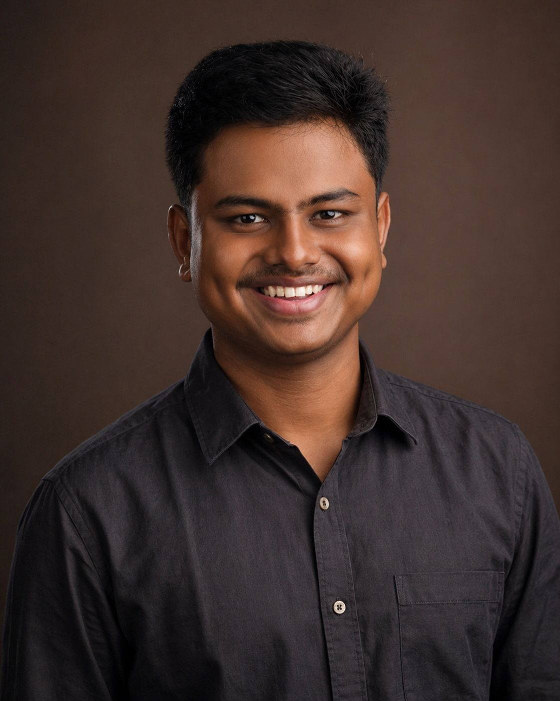

Building the world — one project at a time. Passionate about infrastructure, people, and the stories that shape both.

I build things — infrastructure, systems, and ideas. A fresh graduate from Arizona State University with a Master's in Construction Management and Technology, I've spent years learning how the world comes together, brick by brick and decision by decision.
Outside of work, I'm chasing trails, soaking in simple adventures, and having conversations that actually matter. People and their stories are what drive me — which is probably why I ended up in a field where every project leaves something behind for the world.
Academic foundations in civil engineering and construction management across two countries.
Software and platforms I use to plan, manage, and deliver construction and infrastructure projects.
Industry experience across project engineering, construction management, infrastructure analytics, and project controls.
Supported delivery of a $14 million industrial construction project by coordinating RFIs, submittals, and drawing management. Contributed to field inspections, documentation workflows, and progress tracking using Procore, Newforma, and Salus.
Worked on transportation safety and traffic engineering initiatives for state highway projects. Conducted road safety audits, traffic data analysis, origin-destination studies, and hazard assessments to support data-driven infrastructure decisions.
Supported planning and coordination for a $92.2 million bridge and overpass project. Assisted with scheduling, documentation management, and subcontractor coordination while tracking RFIs and construction progress.
Thoughts on engineering, growth, leadership, infrastructure, and professional development.